You can monitor key system metrics in real time using the ELMA365-Overview dashboard.
It consists of the following workspaces:
- ELMA365.
- ELMA365 – Telemetry.
- Kubernetes Cluster.
- Pods info.
- Nodes info.
- Postgres.
- RabbitMQ.
- MongoDB.
- Redis.
- Ingress.
- Logs.
- Linkerd.
- Kubernetes Events – Stats.
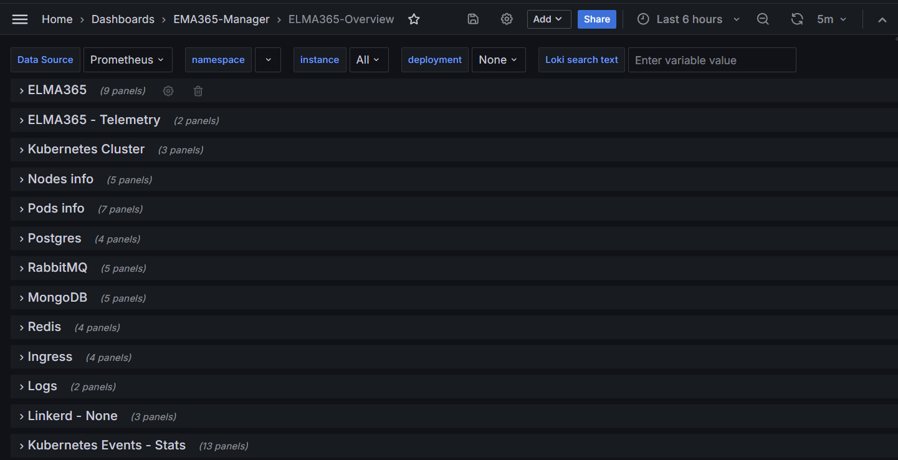
For correct operation of the dashboard, pre-install and configure the monitoring tools according to the following articles:
- Install monitoring tools.
- Monitoring of databases.
- Monitoring of business processes.
- Event monitoring.
- Install Loki.
- Install Linkerd (optional).
Let’s take a closer look at the contents of the ELMA365-Overview workspaces.
ELMA365 workspace
Here you can see charts showing the state of processes in the system: requests from Front API and their processing time, requests to Web API, as well as statistics of script execution.
If the values of indicators exceed the limits, scripts should be optimized.
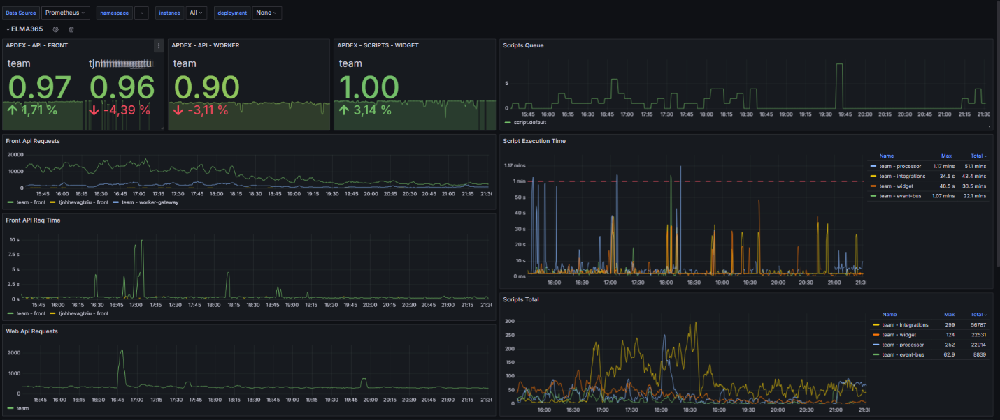
ELMA365 – Telemetry workspace
The charts in this workspace will show you the performance of the scripts.
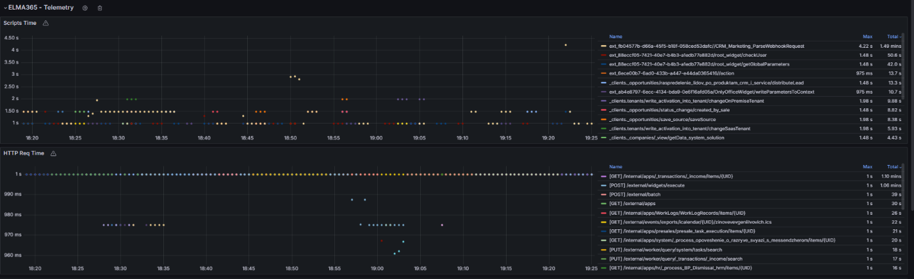
Kubernetes Cluster
On the charts in this section, you can see information about the Kubernetes cluster: the etcd database size, the number of requests that come to the API server of the Kubernetes-cluster, and the etcd request latency.
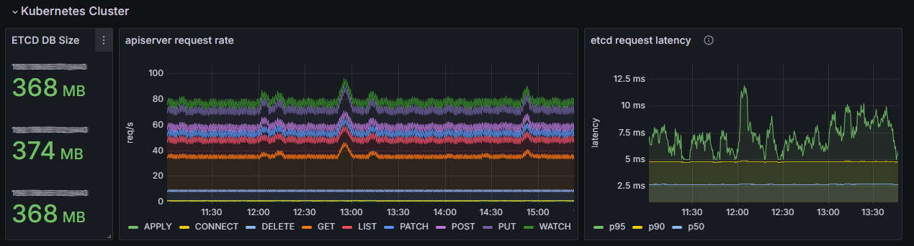
Pods info workspace
Note the CPU and memory consumption of pods, as well as the change of pods’ statuses for selected time intervals.
If there is a sharp increase in resource consumption and their shortage, increase the number of resources and replicas, as well as the limits for pods. Then examine the service logs to identify possible causes of problems and fix them.
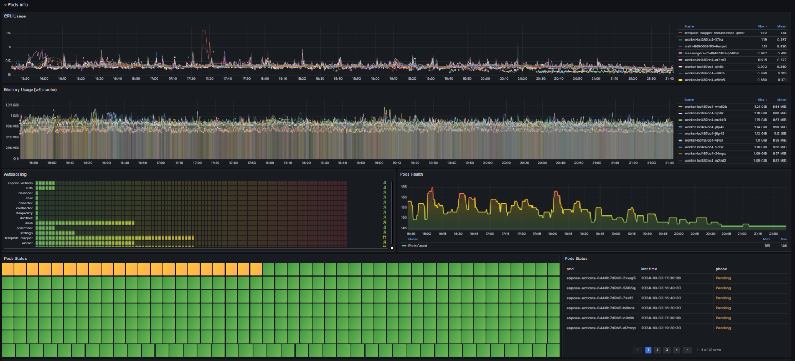
Nodes info workspace
This workspace provides information about the cluster status, including charts showing CPU and memory consumption, average load, network traffic, and available disk space on nodes. Based on this data, you can identify abnormal behavior and take corrective action. For example, if you need to increase missing resources, add additional nodes (8CPU, 16Mem).
If you have deployed a standard Kubernetes cluster, install a high-load Linux system to ensure optimal cluster performance.
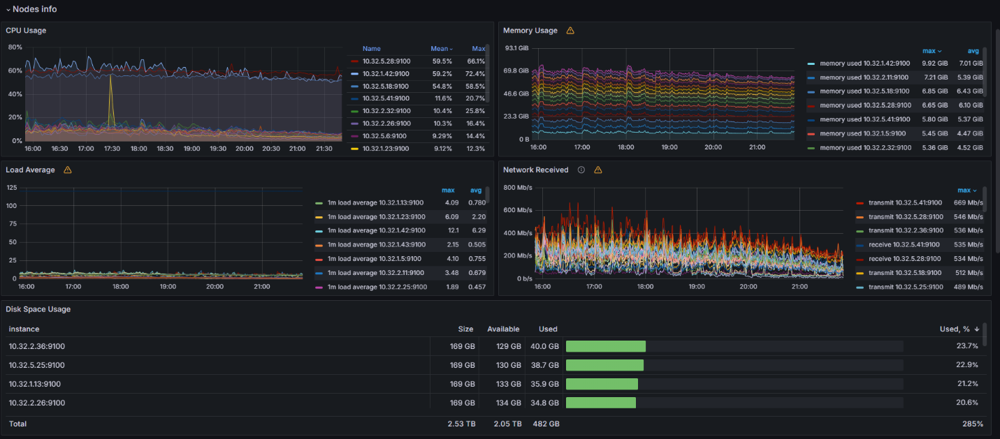
The following workspaces provide information about database health monitoring: Postgres, RabbitMQ, MongoDB, and Redis.
Postgres workspace
The most important chart in this workspace is Stat activity. It shows information about the current activity. If the chart value is close to the maximum (Max Connections), increase the max_connections parameter.
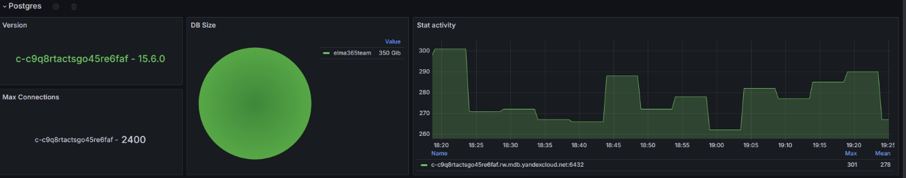
RabbitMQ workspace
The Messages per Queue chart shows the messages in the queue. You can use it to determine which microservice is accumulating messages. If the number of messages does not decrease, reboot the corresponding microservice and examine the service logs using Loki.
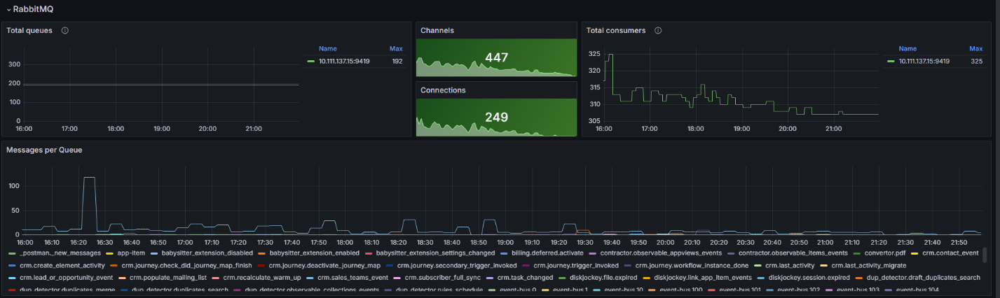
MongoDB workspace
In the charts in this workspace, you can observe open connections, memory load, and query operations.
To track database performance and efficiency, use the Query Operations chart. You can analyze various metrics related to query operations in MongoDB.
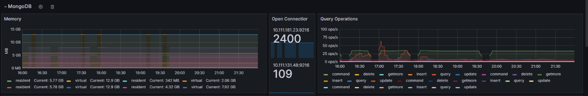
Redis workspace
Note that the Total Commands / sec chart displays the total number of commands per second. It is used to monitor the performance and efficiency of the Redis cache. The chart also allows you to analyze various metrics related to command execution in Redis.
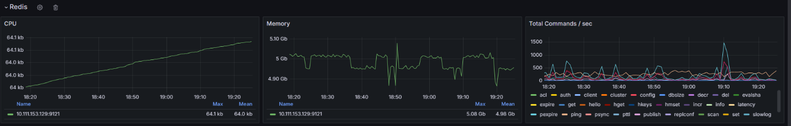
Ingress workspace
Here you can find out the remaining validity of certificates and the number of HTTP requests passing through Ingress.
If the HTTP Error chart shows an increased number of errors, examine the Ingress Nginx logs to determine the cause.
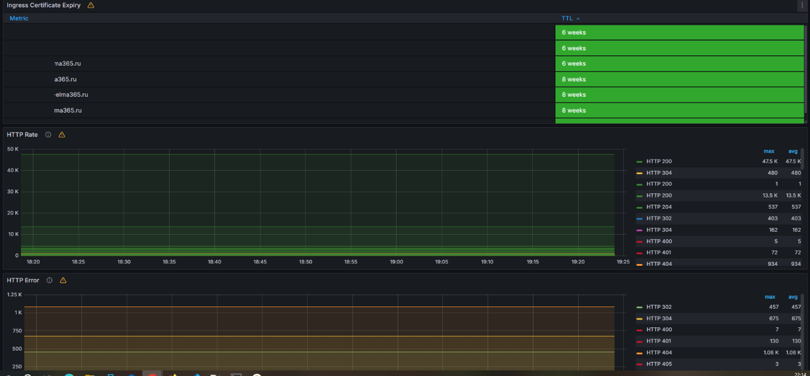
Logs workspace
This workspace is used to quickly analyze logs. Here you can identify the service with the highest number of errors for a given period and examine the logs that that logged using Loki.
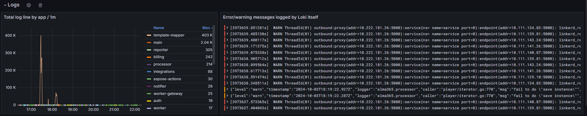
Linkerd workspace
If the Linkerd service is installed, this workspace allows you to monitor the status of mesh connections for a particular deployment. It is important to keep an eye on the Successful rate chart. If there are problems, the number of successful connections will decrease. In this case, analyze Linkerd’s performance, including checking the internal certificate and analyzing the service logs.
The chart below shows the moment of performance degradation. The following warning occurred: level=warning msg=“unable to parse quantity’s suffix (config.linkerd.io/proxy-memory-limit)”. In this case, check the Linkerd configuration file and correct the errors in the requests and limits parameters.
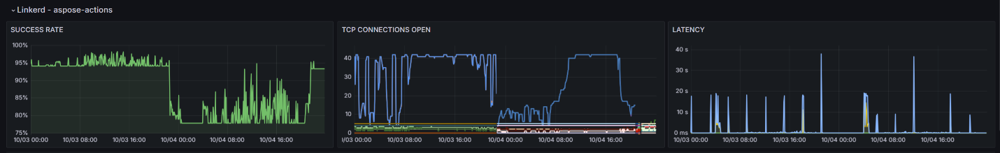
Kubernetes Events – Stats workspace
The charts can be used to track various events in the cluster and provide information about the status of the pods.
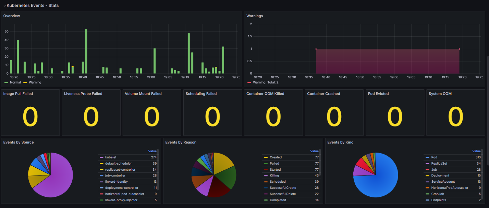
Containers:
- Image Pull Failed. It is impossible to download a container image to run the pod, for example, if the container register is unavailable or the requested image is missing.
- Liveness Probe Failed. This event occurs if communication between the pod and the liveness probe, which is used to check the correctness of the pod operation, is broken.
- Volume Mount Failed. Persistent volume or storage resource cannot be mounted. This behavior can occur if the storage is misconfigured or if there are network or permissions issues.
- Container OOM Killed. The pod has terminated due to insufficient memory. This event occurs if the pod is consuming too much memory and the node cannot provide the required resources.
- Container Crashed. The cause can be an error inside the container or its incorrect operation.
- Pod Evicted. The pod has been removed due to a lack of memory or CPU. The event occurs if a node is overloaded or the pod consumes a large number of resources.
Scheduling events:
- Scheduling Failed. This event occurs when the Kubernetes scheduler is unable to place a pod on a node due to a lack of resources or other constraints.
System events:
- System OOM. This event is logged when there is insufficient memory at the system level, such as due to a high load on a node or insufficient system resources.